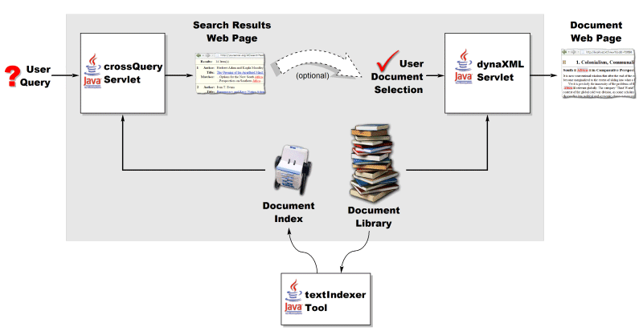
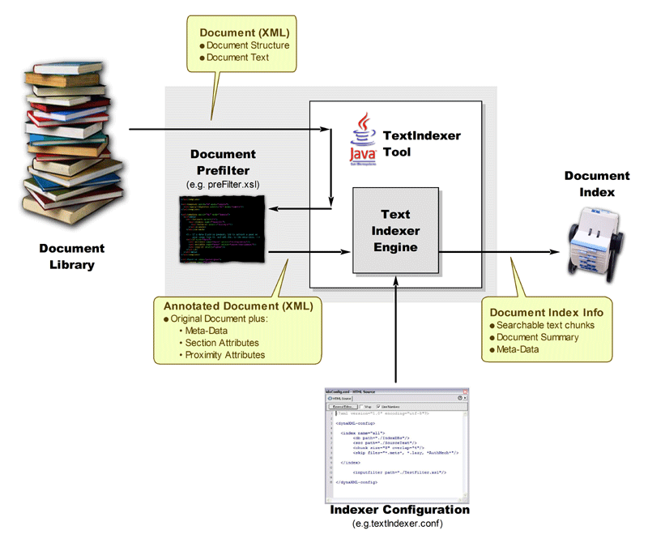
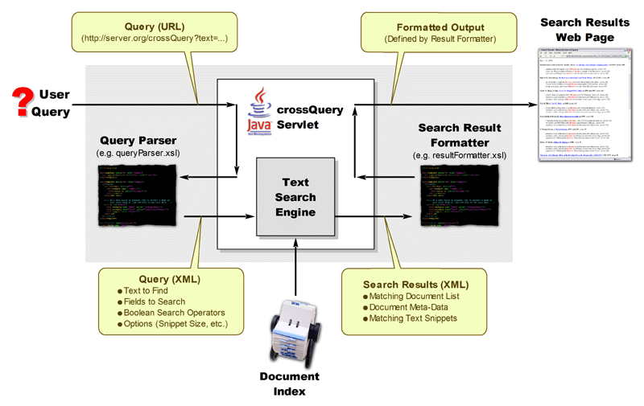

Extensible Text Framework Programming Guide
Table of Contents
- Introduction
- textIndexer Programming
- crossQuery Programming
- dynaXML Programming
- XTF Stylesheet Tag Reference
This guide describes how to customize the operation of the EXtensible Text Framework (XTF) This document assumes that you have completed the basic installation and configuration described in the XTF Deployment Guide, and that their correct operation has been verified.
The XTF system consists of Java Servlets and tools that permit users to perform Web-based searching and retrieval of electronic documents. Its basic organization of the XTF components can be illustrated as follows:

Figure 1: Extensible Text Framework (XTF) Overview
The remainder of this document will examine how to customize the XTF tools and servlets by reprogramming the XSLT templates that define their behavior. As mentioned above in the introduction, the purpose of the textIndexer tool is to create or update a document search index whenever documents are updated, added to, or removed from the document library. If we would isolate and zoom in on the textIndexer portion of the XTF Overview Diagram shown above, we'd see something like this:

Figure 2: Internal organization of the textIndexer Tool
The textIndexer.conf file, the Document Selector stylesheet, and the Pre-filter stylesheet together define how the textIndexer performs the document indexing process. A complete discussion of the textIndexer.conf file appears in the XTF Deployment Guide, and so will not be discussed in any great depth here. The inner workings of the Document Selector and Pre-Filter stylesheets however, are the subject of the following sub-sections.
<directory dirPath="DirectoryPath"> <file fileName="FileName1"/> <file fileName="FileName2"/><file fileName="FileNameN"/> </directory>
The <directory...> tag identifies a single directory in the document library, and the DirectoryPath attribute specifies its absolute file system path. Within the <directory...> tag, each of the <file.../> entries identifies one of files found in the directory. Note that FileName1 through FileNameN do not contain any path information, since the absolute path that applies to all the file tags is already identified by DirectoryPath.
It is the responsibility of the Document Selector XSLT code to output an XML fragment that identifies which of the files in the directory should be indexed. This output XML fragment should take the following form:
<indexFiles>
<indexFile fileName = "FileName"
{format = "FileFormatID"}
{preFilter = "PreFilterPath"}
{displayStyle = "DocumentFormatterPath"}/>
</indexFiles>
Note that the output XML consists of a single <indexFiles> container tag and one <indexFile.../> tag for each document file that needs to be indexed. Within each of the <indexFile.../> tags, the following attributes are defined:
This attribute identifies the name of a file to be indexed, and should be one of the file names received in the input XML fragment.
format
This is an optional attribute that defines the format of the file to be indexed. At this time, XML, PDF, HTML, and Plain Text indexing is supported by the textIndexer tool, and this attribute should be set to the strings XML, PDF, HTML, or Text respectively, depending on the native format of the file. If this attribute is not specified, the textIndexer will try to infer the file type based on the extension for the file.
preFilter
This is an optional attribute that defines the Pre-Filter stylesheet that the textIndexer should use on this document file. If not specified, the text for this file will not be filtered before indexing. See the textIndexer Pre-Filter Programming section for more details about document pre-filtering.
displayStyle
This is an optional attribute that defines the Document Formatter stylesheet associated with the given file. If specified, the textIndexer will create a special cache that is used by the dynaXML servlet to display selected documents more quickly. If not specified, the cache for the current file is not created. For more details, see the discussion of Lazy Document Handling in the XTF Under the Hood guide.
Using these XML input and output specifications shown, a simple document selector might look something like this:
<xsl:stylesheet xmlns:xsl="http://www.w3.org/1999/XSL/Transform" version="2.0">
<xsl:template match="directory">
<indexFiles>
<xsl:apply-templates/>
</indexFiles>
</xsl:template>
<xsl:template match="file">
<xsl:if test="ends-with(@fileName,'.pdf')">
<indexFile fileName="{@fileName}" format="PDF"/>
</xsl:if>
</xsl:template>
</xsl:stylesheet>
In this simple Document Selector example, the first line establishes the xsl namespace used in the rest of the stylesheet. Next, the <xsl:template match="directory"> tag looks for the <directory...> block in the input XML, and writes out a corresponding <indexFiles> block to the output XML. Also the <xsl:template match="file"> template is applied to any tags found within the <directory...> block.
The <xsl:template match="file"> block is the code that is actually responsible for selecting the files to be indexed. In this example, only files that end in .pdf are passed on for indexing, and are assigned the format PDF. No Pre-Filter or Document Formatter stylesheets are defined, and so the textIndexer will not pre-filter or pre-cache display information for PDF files.
Selecting other file types for indexing is as simple as adding more <xsl:if...> clauses to the <xsl:template match="file"> block, like this:
This second <xsl:if...> block passes XML on files for indexing. Note that the <indexFile...> tag doesn't specify the file format, and so the textIndexer is left to infer that the file type is XML from the file extension. Lastly, the <indexFile...> tag also defines a Pre-Filter and a Document Formatter stylesheet for XML files.
While this simple Document Selector example works, its file selection rules are limited only to checking for certain file extensions. Clearly, all the power of XSLT could be used to construct more complicated selection criteria for files, including ignoring various directories, pulling in meta-data from files or URLs, and so on. For a more complete example of a Document Selector stylesheet, see the default style/textIndexer/docSelector.xsl stylesheet.
Defining the XTF Namespace
For the textIndexer pre-filter to work properly, an xtf: namespace must be declared at the top of the pre-filter. To do this, simply add the following attribute to the <xsl:stylesheet...> tag at the top of the pre-filter:
Defining an xtf: namespace in this way and then prefixing textIndexer specific attributes with it allows the textIndexer to distinguish its own attributes from other ones in the filtered document.
Preventing Text from being Indexed
There will be times when the text within certain tags in the XML representation for a document should not be indexed (e.g.: versioning information about the original XML file format.) The XSLT pre-filter can be prevent such tags and their associated text from being indexed. There are two possible ways to do this:
- Standard XSLT programming can be used to eliminate the
tag and its text entirely.
- A special noindex attribute can be added to the tag to tell the textIndexer to ignore its contents when indexing.
A snippet of code showing the use of the noindex attribute can be found in the sample preFilter.xml file that is included with the default XTF installation. It looks as follows:
<xsl:template match="teiHeader">
<xsl:copy>
<xsl:copy-of select="@*"/>
<xsl:attribute name="xtf:noindex" select="'true'"/>
<xsl:apply-templates/>
</xsl:copy>
</xsl:template>
Notice that the noindex attribute when used in the
pre-filter is prefixed with xtf: . This is the namespace
used in XTF tags and attributes to prevent collisions with similarly named tags
and attributes defined by other programs.Finally, it should be mentioned that the noindex attribute has two forms:
noindex = true/yes, false/no
index = false/no, true/yes
Controlling Proximity
If an XTF user specifies a list of words to search for, the crossQuery servlet will rank any matching words that are closer together as better matches than ones that are far apart. This is what is known as proximity searching.There are times however when simple proximity matches will produce undesired results. For example, consider the case where a query matches some words in two different places in a document. For the first match, the words are very close together but in two different chapters' tags. For the second match, the words are all in the same chapter, but slightly further apart. In this case, the proximity search mechanism will incorrectly give a higher score to match with the words that are closer together but split across two chapters.
To correct for these kinds of situations, the pre-filter can insert a proximity break attribute into a tag. Doing so effectively puts an infinite distance between the tag with the break and the text before it, thus entirely preventing proximity matches from being found that span the two tags. For example, to solve the "proximity across chapters" problem described above, a pre-filter might include some code like this:
<xsl:template match="chapter">
<xsl:copy>
<xsl:copy-of select="@*"/>
<xsl:attribute name="xtf:proximitybreak" select="'true'"/>
<xsl:apply-templates/>
</xsl:copy>
</xsl:template>
In this example, the important code is on first and fourth lines. The first
line tells the pre-filter to look for "chapter" tags. And when it finds one,
the fourth line adds a proximity break attribute. Adding this code to the pre-filter
would ensure that proximity matches are never found that span two "chapter"
tags. Sometimes it may still be desirable to find proximity matches across sections, but deemphasize them compared to matches found entirely within a section. In this case, the sectionBump attribute can be used in place of a proximity break. Unlike the proximityBreak tag, the sectionBump tag can be told how much distance (as a number of words) to introduce between two adjacent sections. For example, this code:
<xsl:template match="chapter">
<xsl:copy>
<xsl:copy-of select="@*"/>
<xsl:attribute name="xtf:sectionBump" select="10"/>
<xsl:apply-templates/>
</xsl:copy>
</xsl:template>
would separate adjacent chapters from eachother by ten words. Proximity matches
across chapters would still be found, but they would be considered 10 words
further apart (and therefore less relevant) than similar matches found entirely
within a single section. Just as it may be desirable to deemphasize proximity matches across adjacent sections, it may also be desireable to control proximity matches across sentence boundaries. To accomplish this, the sentenceBump attribute can be added to a tag like this:
<xsl:template match="DocText">
<xsl:copy>
<xsl:copy-of select="@*"/>
<xsl:attribute name="xtf:sentenceBump" select="5"/>
<xsl:apply-templates/>
</xsl:copy>
</xsl:template>
In this example, a hypothetical tag under which all other document tags and
text exist has its sentenceBump value set to 5 words. This effectively separates
the end of one sentence from the beginning of the next by five words. Doing
so makes proximity matches across sentences less relevant than a similar proximity
match entirely within a single sentence.
Sectioning Documents
Another attribute that can be added to document tags is the sectionType attribute. This attribute allows you to assign names to tags witin a document. Doing so would allow permit advanced user queries that only search for text in specific section types. Consider the following example:<xsl:template match="ChapterTitle">
<xsl:copy>
<xsl:copy-of select="@*"/>
<xsl:attribute name="xtf:sectionType" select="'ChapterTitle'"/>
<xsl:apply-templates/>
</xsl:copy>
</xsl:template>
This XSLT code simply labels the text indexed for a chapter title with a "ChapterTitle"
section type. With the text labeled in this manner, the query page presented
to the user could provide an advanced search option to look for text only in
chapter titles. We'll talk more about how to actually do this in the section
below on programming the crossQuery
servlet's Query Parser Stylesheet. One other thing to mention about sectionType attributes is that they may be used in nested tags. The textIndexer maintains an internal stack of nested section types, and correctly restores previous section types when a given section/tag ends.
Relevance Boost
There may be times when it is useful to boost or deemphasize the relevance of text in a particular part of a document. Consider the case where you had a document that was a book of quotations. In such a document, it might make sense to boost the relevance of the text in the actual quotations as compared to any text that discussions the quotations. To facilitate this, the textIndexer pre-filter provides a wordboost attribute. The following example illustrates its use:<xsl:template match="Quotation">
<xsl:copy>
<xsl:copy-of select="@*"/>
<xsl:attribute name="xtf:wordboost" select="1.5"/>
<xsl:apply-templates/>
</xsl:copy>
</xsl:template>
This XSLT code simply boosts text found in Quotation
tags to be 1.5 times more relevant than non-boosted text in the document. Conversely,
to deemphasize text simply use a value between zero and one (e.g., a boost of
0.5 would make text half as relevant when searching.) As with section attributes, the wordboost attribute may be used in nested tags. The textIndexer maintains an internal stack of nested boost values, and correctly restores previous values when a given section/tag ends. Note however that boost values in nested tags do not accumulate. That is, a tag with a boost value of 1.5 will boost the relevance of its words by 1.5, regardless of the boost values applied to any tags that contain it.
Adding or Marking Meta-Data
There are times when it is useful to record Meta-Data for a document. Meta-Data is simply information about a document that is not part of the document text itself. The author name, document publication date, and document revision are all examples of Meta-Data. The textIndexer system supports the concept of Meta-Data through the use of the meta attribute. Using the pre-filter to add this attribute to a tag causes name of the tag and its contents to be recorded in a special Meta-Data section of the index for the document. For example:<xsl:template match="PublicationInfo">
<xsl:copy>
<xsl:copy-of select="@*"/>
<xsl:attribute name="xtf:meta" select="'true'"/>
<xsl:apply-templates/>
</xsl:copy>
</xsl:template>
This snippet of pre-filter code would take any tag with the name PublicationInfo and add a meta attribute to it, thus telling the textIndexer to add the publication info to the meta-data index for the current document rather than the main text index. Once meta-data has been recorded for a document, it can be searched by modifying the crossQuery servlet's Query Parser Stylesheet to generate meta search requests. Doing so is described in detail below in the Query Parser Programming section below.
Another way in which meta-data for a document can be used is as a query sort key. Sort keys are used by the crossQuery servlet to reorder how query matches are displayed for the user. To use a meta-field as a sort key, its contents must not be tokenized. Since tokenizing is turned on by default to make a meta-data field searchable, the pre-filter code that processes meta-data must explicitly turn tokenizing off. This is accomplished as follows:
<xsl:template match="PublicationInfo">
<xsl:copy>
<xsl:copy-of select="@*"/>
<xsl:attribute name="xtf:meta" select="'true'"/>
<xsl:attribute name="xtf:tokenize" select="'no'"/>
<xsl:apply-templates/>
</xsl:copy>
</xsl:template>
Like the previous example, this pre-filter code would take any tag with the name PublicationInfo and mark it as meta-data. But the addition of the line of code shown in red disables tokenizing so that the meta-data can be used as a sort key by the crossQuery servlet.
It is important to note that since meta-data must be tokenized to be searchable, and it must not be tokenized to be used as a sort key, meta-based searching and sorting operations are effectively mutually exclusive. If you want to perform both searching and sorting on a collection of meta-data, you'll need to add code to your prefilter to produce two copies of that meta-data: one copy for searching that is tokenized, and one copy for sorting that is not tokenized.
In closing, a few additional facts should be mentioned about the attributes supported by the XTF system:
- All the examples above show the textIndexer
pre-filter adding attributes to the XML representation for a document. However,
for native XML documents, the attributes could have simply been embedded in
the original source document tags. The disadvantage of doing so, however,
is that the attributes in every XML document would need to be updated whenever
indexing changes are made to the XTF system.
- A single tag can be assigned more than one attribute.
For example, a tag could be assigned both a word boost and a section title
if desired. Note however that some combinations (like sectionType
+ proximitybreak) are redundant and unnecessary.
- Currently, when a meta attribute is added to a tag, all the other XTF specific attributes are ignored (e.g., wordboost, proximitybreak, etc.)
The crossQuery servlet previously shown in the XTF overview allows users to search the document library for particular words or phrases. If we look more closely at the crossQuery portion of the XTF Overview Diagram, we'll see something like this:

Figure 3: Internal organization of the crossQuery Servlet
This query URL is then passed on to the crossQuery servlet for processing. The first thing the servlet does is translate the query URL into an XML query that the crossQuery search engine can actually understand. This translation is accomplished by the XSLT based Query Parser (queryParser.xsl.)
The crossQuery search engine then uses the XML query to look for occurences of the specified text in the document index. Any matches that are found in the index are assembled into a list of XML tags, and passed on to Result Formatter stylesheet (resultFormatter.xsl.) The Result Formatter stylesheet then converts the list of matches into HTML for review by the user.
The remaining two subsections describe in detail how to write Query Parser and Result Formatter XSLT code to carry out the necessary translations.
What we're trying to find here is any document containing both "man" and "war", but not "Man of War", which is a kind of jellyfish. In theory, the web page into which the user types the search query could take a simplified English-like representation of the query with the form:
but writing an XSLT parser to process it would be a complicated endeavor. To simplify things, we'll assume that the web page has a field that accepts all the words or phrases to find, and another field that accepts all the words or phrases to exclude. For our specific example, the user would type
into the text to find field, and
into the text to exclude field. Note that each word or phrase is separated from the others by a space, and that an exact phrase (like Man of War) is enclosed in double-quotes to differentiate it from a list of individual words. The resulting query URL that would be passed to the crossQuery servlet would then look something like this:
Notice that the first part of the URL (everything before the ? symbol) invokes the crossQuery servlet, and second part of the URL (everything after the ? symbol) defines the search to be performed. Also notice that search to be performed is represented by two parameters:
| text=man+war | The list of words search for. |
| text-exclude=%22Man+of+War%22 | The phrase to exclude from the search. |
These two parameters carry the "find" and "exclude" semantics represented by the two fields of our imagined query Web-Page. As is typical for URLs, the spaces in each parameter have been replaced with plus signs (+), and the double-quote characters have been replaced with their ANSI equivalent hexadecimal values.
Since the Query Parser is written in XSLT, it actually expects an XML document as its input, and not a URL like the one presented above. Consquently, the crossQuery servlet preprocesses the query URL and turns it into an XML input fragment for the Query Parser to translate. In general, the input XML passed to the Query Parser looks like this:
<parameters> <param name="ParamName" value="ParamValue"> Token | Phrase Token | Phrasewhere Token specifies a single word, and has the form:
where
| value="Word" | is the actual word or symbol extracted from the URL. |
| isWord="YesOrNo" | identifies whether the token is a word or punctuation symbol. |
and Phrase specifies an entire phrase extracted as a single string, with the form:
<phrase value="StringOfWords"> Tokenwhere
| value="StringOfWords" | is the entire phrase extracted from the URL as a single string. |
| Token...Token | is the original phrase broken down into individual token tags for each word or symbol in the phrase. |
For our particular example URL, the input XML fragment passed to the Query Parser would be:
<parameters>
<param name="text" value="man war">
<token value="man" isWord="yes"/>
<token value="war" isWord="yes"/>
</param>
<param name="text-exclude" value=""Man of War"">
<phrase value="Man of War"/>
<token value="Man" isWord="yes"/>
<token value="of" isWord="yes"/>
<token value="War" isWord="yes"/>
</phrase>
</param>
</parameters>
As mentioned before, it is the job of the the Query Parser XSLT code to
translate the above input into an XML query that the crossQuery
search engine understands. The general format of an XML query passed to the search
engine has the form: <query style="ResultFormatterLocation"> QueryType </query>The <query...> tag is always the outermost tag in a query, containing all the other tags that define the query to be performed. Through its style="ResultFormatterLocation" attribute, it also defines the path to the Result Formatter XSLT stylesheet. This path is relative to the base install path for the XTF system (i.e., XTF_HOME.)
Within the <query...> tag, a QueryType tag is specified to identify the type of query to perform. The query type tag identifies whether the query is a text query, a meta-data query, or a combined text/meta-data query. For the sample "man" and "war" not "Man of War" query shown above, we would use a simple text query, which has the form:
<text indexPath="LocationOfIndexDBToUse"> SearchType </text>This tag indicates that we wish to search only the document text (and not the meta-data associated with the document.) Through its indexPath="LocationOfIndexDBToUse" attribute, this tag also identifies the index database to use when searching for matches. As with most other XTF related path attributes, if it is not specified as an absolute path, this path is assumed to be relative to the XTF base installation directory (i.e., XTF_HOME.)
Within the query type tag, a single SearchType tag is specified. A search type tag identifies a search operation to be performed. A search type tag can identify a single Term or word to search for:
<term>WordToFind</term>
Alternately, it may identify a Phrase to search
for:
<phrase>
Term
Term
</phrase>
Or it may identify a Clause to search for:
<ClauseType> Term | Phrase | Clause Term | Phrase | ClauseWhere valid ClauseType values are and, or, not, and near. Each of these clause types do pretty much what you would expect:
- The and clause requires all its sub-terms/phrases/clauses to be present for a match to occur.
- The or clause requires any one of its sub-terms/phrases/clauses to be present for a match to occur.
- The not clause requires that none of its sub-terms/phrases/clauses are present for a match to occur.
- The near clause requires all its sub-terms/phrases/clauses to be near each other for a match to occur. The definition of near is fairly complicated, and will not be discussed here. See the Query Parser tag reference for an in-depth description of the near clause.
the final output query would look as follows:
<query style="./style/crossQuery/resultFormatter.xsl">
<text indexPath="./index">
<and>
<term>man</term>
<term>war</term>
<not>
<phrase>
<term>Man</term>
<term>of</term>
<term>War</term>
</phrase>
</not>
</and>
</text>
</query>
At this point, the trick is to write a queryParser.xsl
stylesheet that converts the given input XML fragment into the output XML query
shown above. Unfortunately, writing XSLT is way beyond the scope of this document
and will not be discussed here. The good news however is that the sample queryParser.xsl
included with the XTF installation performs the necessary query conversion illustrated
in this example, and is a good starting point for creating your own custom Query
Parser. It should also be noted that the various query tags illustrated here have been shown in their simplest form for the sake of clarity. For example the Query tag has additional attributes that allow query matches to be returned a few at a time. This allows the Result Formatter to display search results in multiple pages rather than as a single long page. Similarly, Phrase tags are in fact recursive, and can contain sub-phrases or clauses, and not just Term tags. For a complete description of query tags and the attributes they support, please refer to the Query Parser Tag Reference at the end of this document. What the filter does
Input
Output
What the filter does
Input
Output
This section provides...
Figure 3: Internal organization of the crossQuery Servlet
Document Request Parser Programming
What the filter doesInput
Output
Document Formatter Programming
The Document Formatter stylesheet receives as its input the requested XML document. For its output it shold produce an HTML based document web-page that can be viewed in the user's browser.The XML document passed by the dynaXML servlet to the Document Formatter Stylesheet consists of the original XML source document with the following additions:
- Any added attributes introduced by the textIndexer Pre-Filter when the document was indexed.
- If a query accompanied the document request, a snippets tag will appear at the top of the document, summarizing of all the hits found within the document.
- If a query accompanied the document request, then zero or more hit and term tags will appear around matching text in the main body of the document for the given query.
The snippets summary tag will have the following form:
<snippets>
Snippet
Snippet
</snippets>
where each Snippet is a dynaXML
snippet tag that summarizes one query
match in the requested document.
What the filter doesInput
Output
This section provides a quick reference to the various XTF sytlesheet tags recognized
by the textIndexer tool, and the crossQuery and dynaXML
servlets.
HTTP Request Parameter Reference
This section summarizes the standard HTTP request fields available to every stylesheet used by the crossQuery and dynaXML servlets. These fields are presented to a servlet stylesheet as XSL parameters with the prefix http. and refer to the original request URL sent to the XTF system.
This field identifies the full URL passed to the XTF system for the current request. It is accessed via the XSL parameter
This field contains a URL string of the form:
where
| yourserver | is the name of your XTF server |
| yourport | is the port through which XTF requests are routed (typically 8080) |
| servlet | is the name of the servlet
to which the request is being sent. Normally, this is either
org.cdlib.xtf.crossQuery.CrossQuery
or
org.cdlib.xtf.dynaXML.DynaXML
|
| queryparms | is the list of parameters that defines the actual request being sent to the servlet. |
This field identifies the browser that issued the current request. It is accessed via the XSL parameter
This field contains a string that identifies the browser that made the current request. For example:
Note that the contents of this field vary widely depending on which browser made the request, and a detailed description is beyond the scope of this document.
This field identifies the web page from which the request URL was issued. It is accessed via the XSL parameter
This contents of this field is a URL string identifying the web page that issued the request.
This field identifies the last time a particular request URL was issued by a browser. This field can be used by an XTF stylesheet to determine if a request needs to be processed because the XTF database has changed, or whether the requesting browser can use its previously cached results. This field is accessed via the XSL parameter
This contents of this time string of the form:
where
| weekday | is the day of the week the request was last issued |
| dd-mmm-yy | is the day, three letter month abbreviation, and year the request was last issued |
| hh:mm:ss | is the time the request was last issued, represented as a 24 hour GMT based time |
| timezone | is the offset in hours of the timezone from which the request was last issued. |
Input Tags
The following tags make up the XML input for the Document Selector stylesheet. They constitute a simple XML representation files found in one (sub-) directory of the document library.This tag is the outer-most tag for the XML input fragment sent to the Document Selector stylesheet for translation. It has the form:
<directory dirPath="DirectoryPath"> File File
| dirPath="DirectoryPath" | is absolute file path to the directory on disk. |
| File, File... | is zero or more File Tags, one for each file found in the directory. |
This tag is the input to the Document Selector stylesheet for each file found in the containing <directory...> tag. It has the form:
where
| fileName="FileName" | is the name of a file found in the directory identified by the containing <directory...> tag. Note that this file name does not contain any path information for the file, but only the file name itself. |
Output Tags
The following tags make up the XML input for the Document Selector stylesheet. They constitute a simple XML representation of files found in one (sub-) directory of the document library.This tag is the outer-most tag for the XML output fragment issued by the Document Selector stylesheet. It has the form:
<indexFiles>
FileToIndex
FileToIndex
FileToIndex
</indexFiles>
| FileToIndex, FileToIndex... | is zero or more File To Index Tags, one for each file found in the directory. |
One copy of this tag should be output by Document Selector stylesheet for each file that must be indexed. It should appear within an Index List Tag container. It has the form:
<file fileName = "FileName" {format = "FileFormat"} {preFilter = "PreFilterPath"} {displayStyle = "DocumentFormatterPath"}/>where
|
fileName="FileName"
|
is a required attribute
that specifies the name of a file to be indexed. Note that
this file name should not contain any path information
for the file, but only the file name itself.
|
|
format="FileFormat"
|
is an optional attribute
that specifies the format of a file to be indexed. Currently
XML, PDF, HTML and Plain Text files are handled by the textIndexer,
and the format attriibute should correspondingly be set to
XML, PDF,
HTML, or Text. If this attribute
is omitted, the textIndexer will try to infer
the file type based on the file extension.
|
|
preFilter="PreFilterPath"
|
is an optional attribute
that specifies the path to the Pre-Filter stylesheet
to be applied to this file. If this path is not specified
as an absolute path, it is assumed to be relative to the XTF
base installation directory (i.e., XTF_HOME.)
If this attribute is omitted, no pre-filter will be applied
to the file.
|
|
displayStyle="DocumentFormatterPath"
|
is an optional attribute
that specifies path to the Document Formatter stylesheet
to use for this file. If this path is not specified as an
absolute path, it is assumed to be relative to the XTF base
installation directory (i.e., XTF_HOME.)
If this attribute is present, the textIndexer will create a special cache that is used by the dynaXML servlet to display the current file more quickly. If this attribute is omitted, the cache is not created. For more details, see the discussion of Lazy Document Handling in the XTF Under the Hood guide. |
This section summarizes the attributes defined for the Pre-Filter stylesheet used by the textIndexer tool.
<xsl:attribute name="xtf:noindex" select="'TrueOrFalse'"/>
The value for either of these tags should be set to either the string 'true' or the string 'false' .
The select value for this tag should be set to either the string 'true' (text in tag is meta data) or the string 'false' (text in tag is not meta data.)
The select value for this tag should be set to either the string 'true' (introduce a proximity break) or the string 'false' (do not introduce a proximity break.)
To de-emphasize rather than disallow proximity matches across sections, use the sectionBump attribute instead.
Input Tags
The following tags make up the XML input for the Query Parser stylesheet. They constitute a simple XML representation of the query URL supplied to the crossQuery servlet from the user query web-page.This tag is the outer-most tag for the XML input fragment sent to the Query Parser stylesheet for translation. It has the form:
<parameters>
ParameterBlock
ParameterBlock
</parameters>
This tag is the XML input to the queryParser.xsl for a single parameter in a user query URL. It has the form:
<param name="ParamName" value="ParamValue"> Token | Phrase Token | Phrase
| name="ParamName" | is the name of the parameter extracted from the original query URL. |
| value="ParamValue" | is the original text in the query URL that is assigned to the specified parameter. |
Note that each of the parameters from the query URL is also available as a standard XSL parameter with the form:
This allows query parameters to be accessed either through th standard template driven XML or through stylesheet parameters.
This tag identifies a single word or token taken from the query URL. It has the form:
where
| value="Word" | is the actual word or symbol extracted from the URL. |
| isWord="YesOrNo" | identifies whether the token is a word (isWord="yes") or a punctuation symbol (isWord="no".) |
This tag identifies a literal phrase taken from the query URL. It has the form:
<phrase value="StringOfWords"> Token Token
| value="StringOfWords" | is the entire phrase extracted from the URL as a single string. |
| Token, Token... | is the original phrase broken down into one or more token tags (one for each word or symbol in the phrase.) |
These tags are used by the Query Parser stylesheet to form the XML query passed to the crossQuery Text Search Engine for processing.
This tag is outer-most tag in an XML query sent to the crossQuery servlet's Text Search Engine. It has the form:
<query style = "ResultFormatterLocation"
{sortMetaFields = "ListOfMetaFields"} {startDoc = "FirstDocToReturn"} {maxDocs = "MaxDocsToReturn"} {termLimit = "MaxTermsToAllow"} {workLimit = "MaxWorkToAllow"}> QueryType </query>
|
style="ResultFormatterLocation"
|
is the path to the Result Formatter stylesheet to use to display the results generated by the current query. If this path is not specified as an absolute path, it is assumed to be relative to the XTF base installation directory (i.e., XTF_HOME.) |
|
sortMetaFields="ListOfMetaFields"
|
is an optional attribute specifying a list of meta fields by which to sort the results. The list should consist of a quoted string containing one or more meta-field names, separated by commas. If multiple meta-fields are specified, the results are sorted first by the left-most meta-field, then sub-sorted by subsequent fields to produce the final output. Optionally, each meta-field name can be preceeded by a plus sign (+) or a minus sign (-) to indicate whether the results for that field should be sorted in ascending or descending order. If no plus or minus sign is specified for a meta-field, then the results are sorted in ascending order by default. (Note: Meta tags to be used for sorting queries should also have an xtf:tokenize="no" attribute set, or sorting will produce unpredictable results.) |
|
startDoc="FirstDocToReturn"
|
is an optional attribute specifying the ordinal number of the first matching document to pass on to the Result Formatter If not specified, this attribute defaults to 1, meaning the first document that contains matches for the specified query. |
|
maxDocs="MaxDocsToReturnt"
|
is an optional attribute specifying the number of matching documents to pass on to the Result Formatter. If not specified, this attribute defaults to -1, meaning all the documents with matches for the specified query. |
|
termLimit="MaxTermsToAllow"
|
is an optional attribute that limits the number of terms permitted in a query. If not specified, this attribute defaults to -1, meaning no limit is enforced. This attribute is used primarily to prevent wildcard expansions like <term>a*</term> from overloading the crossQuery servlet. If the query does in fact exceed the limit specified by this attribute, a TermLimit error is sent to the Error Generator stylesheet for the offending query. |
|
workLimit="MaxWorkToAllow"
|
is an
optional attribute that limits the amount of "work" that may
be performed in a query. If not specified, this attribute defaults
to -1, meaning no limit is enforced. This attribute is used primarily to prevent queries from overloading the crossQuery servlet, which would adversly impact the responsiveness of the XTF system. If a query exceeds the work limit set by this attribute, a WorkLimit error is sent to the Error Generator stylesheet for the offending query. For the crossQuery servlet, one unit of "work" is equivalent to finding a single matching term in a single document. Experimentally, a value of 500,000 for this attribute seems to work well. |
The primary purpose of the startDoc and maxDocs attributes is to allow search results to be split up into multiple pages by the Result Formatter. For example, to display the second page of 50 matching documents, the following query tag could be generated by a link on the current result page:
<query style="./style/crossQuery/queryParser.xml", startDoc="51", maxDocs="50">
</query>
Note that the Query Parser stylesheet can issue a single top-level error tag instead of a query tag if it encounters any errors.
This tag can be issued by the Query Parser when it encounters an error. It has the form:
<error message="Error Message"/>
This tag is a top level tag, and should be issued by itself in place of the normal query tag when an error occurs. Once issued, the error will be routed to the crossQuery Error Generator stylesheet for processing.
This tag specifies that the query it contains should be carried out on the main text of a document. The format of a text query is as follows:
<text {indexPath = "IndexDBLocation"}
{maxSnippets = "SnippetsToOutput"}
{maxContext = "maxContextChars"}>
SearchType
</text>
| indexPath="IndexDBLocation" | is the path to the Index Database to use when performing the search. If this path is not specified as an absolute path, it is assumed to be relative to the XTF base installation directory (i.e., XTF_HOME.) |
| maxSnippets="SnippetsToOutput" | identifies the number of snippets
to pass on to the Result Formatter stylesheet for display.
A snippet is defined as the matching text found in a document
for a particular query, along with some additional text around
it for context. The amount of context displayed for each match
is defined by the maxContext attribute.
If not specified this attribute defaults to 3, meaning snippets for the top three matches for a document are returned. Also, this attribute can be set to -1, meaning all the snippets for a document are returned. |
| maxContext="maxContextChars" | identifies the size of a snippet to pass on to the Result Formatter snippet tag. If not specified, this attribute defaults to 80 characters. Note that the context length is the total number of characters for the snippet, which includes both the matched text and the context text surrounding it. |
To perform meta-data queries or combined text/meta-data queries, use the meta and combine tags described below.
This tag specifies that the query it contains should be carried out on the meta-data for a document. To perform main text queries or combined text/meta-data queries, use the text and combine tags. The format of a meta query is as follows:
<meta indexPath="IndexDBLocation"> SearchType </meta>
| indexPath="IndexDBLocation" | is the path to the Index Database to use when performing the search. If this path is not specified as an absolute path, it is assumed to be relative to the XTF base installation directory (i.e., XTF_HOME.) |
This tag specifies that the query it contains should be carried out on both the meta-data and the main text for a document. To perform separate meta-data or main text queries use the meta or text tags. The format of a combined query tag is as follows:
<combine indexPath="IndexDBLocation"> TextQuery MetaQuery </combine>
| indexPath="IndexDBLocation" | is the path to the Index Database to use when performing the search. If this path is not specified as an absolute path, it is assumed to be relative to the XTF base installation directory (i.e., XTF_HOME.) |
This tag specifies a single word to search for. This tag has the form:
<term {metaField="MetaFieldName"}> WordToFind </term>
| metaField="MetaFieldName" | is an optional attribute used during meta-data searches to identify the name of the meta-field to be searched. If this attribute is missing for a meta-search, the parent tag's meta-field name is used. If no parent meta-field name exists, a General Exception will be sent to the crossQuery Error Generator stylesheet. Similarly, if this attribute is present for a non-meta search, and has any value other than "text", a General Exception will also be generated. |
This tag specifies an exact phrase to search for. This tag has the form:
<phrase {metaField="MetaFieldName"}>
Term | Phrase | Clause
Term | Phrase | Clause
</phrase>
| metaField="MetaFieldName" | is an optional attribute used during meta-data searches to identify the name of the meta-field to be searched. If this attribute is missing for a meta-search, the parent tag's meta-field name is used. If no parent meta-field name exists, a General Exception will be sent to the crossQuery Error Generator stylesheet. Similarly, if this attribute is present for a non-meta search, and has any value other than "text", a General Exception will also be generated. |
Note that document text will only match a phrase, if all the terms in the phrase tag appear in the document in same order, with no other intervening words.
This tag defines a search where all of sub-terms or clauses must exist in a document for a match to be made. This tag has the form:
<and {metaField="MetaFieldName"}>
Term | Phrase | Clause
Term | Phrase | Clause
</and>
| metaField="MetaFieldName" | is an optional attribute used during meta-data searches to identify the name of the meta-field to be searched. If this attribute is missing for a meta-search, the parent tag's meta-field name is used. If no parent meta-field name exists, a General Exception will be sent to the crossQuery Error Generator stylesheet. Similarly, if this attribute is present for a non-meta search, and has any value other than "text", a General Exception will also be generated. |
This tag defines a search where any one of sub-terms or clauses must exist in a document for a match to be made. This tag has the form:
<or {metaField="MetaFieldName"}>
Term | Phrase | Clause
Term | Phrase | Clause
</or>
| metaField="MetaFieldName" | is an optional attribute used during meta-data searches to identify the name of the meta-field to be searched. If this attribute is missing for a meta-search, the parent tag's meta-field name is used. If no parent meta-field name exists, a General Exception will be sent to the crossQuery Error Generator stylesheet. Similarly, if this attribute is present for a non-meta search, and has any value other than "text", a General Exception will also be generated. |
This tag defines a search where none of sub-terms or clauses must exist in a document for a match to be made. This tag has the form:
<not>
Term | Phrase | Clause
Term | Phrase | Clause
</not>
Note that the not tag is different from other tags in that it is always "subtracted" from any clause or phrase tag that enclose it. That is, within any tag that contains it, the not tag can be read as "but not..." (i.e., "this AND that BUT NOT the other", or "this OR that BUT NOT the other", etc.) The subtractive nature of the not tag also implies the following two additional restrictions:
- The not tag can only appear within some other type of clause, and never as a top-level tag itself.
- The not tag doesn't have its own metaField attribute, but rather always inherits the parent tag's metaField name.
This tag defines a search where all of sub-terms or clauses must be in a document, and within a specified distance of each other for a match to be made. This tag has the form:
<near slop="MaxMatchDistance" {metaField="MetaFieldName"}> Term | Phrase | Clause Term | Phrase | Clause
| slop="MaxMatchDistance" | is a measure of the
"nearness" of the terms or clauses specified. A slop value for
a potential match is accumulated as follows:
Note that a setting the slop value for the near tag to zero effectively produces an exact phrase search, and is in fact how the phrase tag is implemented internally. |
| metaField="MetaFieldName" | is an optional attribute used during meta-data searches to identify the name of the meta-field to be searched. If this attribute is missing for a meta-search, the parent tag's meta-field name is used. If no parent meta-field name exists, a General Exception will be sent to the crossQuery Error Generator stylesheet. Similarly, if this attribute is present for a non-meta search, and has any value other than "text", a General Exception will also be generated. |
It should also be noted that if the value specified for the slop attribute exceeds the maximum proximity for the index being used, the maximum proximity value will be used instead.
This tag matches any words that fall within the range specified by the specified first and last term. It has the form:
<range {inclusive="YesOrNo"} {metaField="MetaFieldName"}>
<upper>FirstTermToFind</upper>
<lower>LastTermToFind</lower>
</range>
| inclusive="YesOrNo" | is an optional attribute that specifies whether the range should include the first and last term when matching. If not specified, this attribute defaults to yes. |
| metaField="MetaFieldName" | is an optional attribute used during meta-data searches to identify the name of the meta-field to be searched. If this attribute is missing, the parent tag's meta-field name is used. If no parent meta-field name exists, a General Exception will be sent to the crossQuery Error Generator stylesheet. |
| FirstTermToFind | is the first term in the range to find. Usually, this is a starting number, date, or year. |
| LastTermToFind | is the last term in the range to find. Usually, this is an ending number, date, or year. |
While technically not an XML tag, the RAW URL parameter can be helpful when debugging a Search Result Formatter stylesheet. This parameter is added to a query URL, and has the form:
where
| YesOrNo | specifies whether or not raw XML search results are sent to your browser. If set to yes , the Search Result Formatter stylesheet is disabled for the query, and raw XML search results are sent to your browser. If set to no , the XML search results are sent to the Search Result Formatter stylesheet for processing, and its output in turn is sent to the browser. |
This tag is the outer-most container tag for the results produced by the crossQuery servlet. It has the form:
<crossQueryResult totalDocs="NumberOfDocs" startDoc="FirstDocNumber" endDoc="LastDocNumber">
| totalDocs="NumberOfDocs" | is the number of documents that had matches for the specified query. |
| startDoc="FirstDocNumber" | is the sequential document number for the highest ranking document in the current Query. Note that this may not be the overall highest ranking document if a paged query was specified. See the query tag for more details about performing paged queries. |
| endDoc="LastDocNumber" | is the sequential document number for the lowest ranking document match in the current query. Note that this may not be the overall lowest ranking document if a paged query was specified. See the query tag for more details about performing paged queries. |
This tag identifies a document containing one or more matches for the current query. This tag has the form:
<docHit rank="DocRelevanceRank" path="DocumentLocation" score="DocRelevanceScore">
| rank="DocRelevanceRank" | is the ordinal ranking of this matching document, with 1 being the most relevant document for a query. Note that this is an absolute ranking for the document with respect to the entire query, and not a page relative ranking. For more information about paged queries, see the query tag. | |
| path="DocumentLocation" | is the file path and name for the matching document. This path is relative to the base XTF directory (i.e., XTF_HOME.) | |
| score="DocRelevanceScore" | is the document relevance score ranging from 0% to 100%. The document with the highest overall relevance will receive a score of 100%, and less relevant documents will receive lower scores. Note that this score is an overall relevance score and is not affected by paging. For information about paged queries, see the query tag. |
This tag identifies a block of meta-data for a matching document. This tag has the form:
<meta>
The document meta-data tag is always included in the query results, regardless of whether there are any matches in it or not. This guarantees that the result formatter has access to the title of the document and other document related information in addition to the match results.
This tag contains a snippet of text associated with a match found in a document. The snippet consists of the text matched along with some context text around it. This tag has the form:
<snippet rank="MatchRelevanceRank" score="MatchRelevanceScore"> Hit Text (and context text, if any) </snippet>
| rank="MatchRelevanceRank" | is the ordinal ranking of this match in the current document, with 1 being the most relevant match in the document. Note that this is an absolute ranking for the match with respect to the entire document, and not a page relative ranking. For more information about paged queries, see the query tag. |
| score="MatchRelevanceScore" | is the relevance score for this match ranging from 0% to 100%. The snippet with the highest overall relevance will receive a score of 100%, and less relevant snippets will receive lower scores. Note that this score is an overall relevance score and is not affected by paging. For information about paged queries, see the query tag. |
Within the snippet itself, each matching word from the query will be marked with a single term tag, and the matching text around which the context text is centered on will also be marked with a single hit tag.
This tag identifies actual matched text within the context text of a snippet tag. This tag has the form:
<hit>
If the original query used a near or and clause, the hit tag will mark the entire range of text between the first and last word found for the clause. For example, for a "man" near "war" query, the result would look like this:
<snippet rank="3" score="86">
that <hit><term>man</term> had never actually been to <term>war</term></hit>, but
he spoke as if he had
</snippet>
This tag identifies a word in a document that matches one of the terms in the query. This tag has the form:
<term>
MatchedWord
</term>
For convenience, all of the error information passed into the Error Generator stylesheet as XML tags is also available in the following XSLT parameters:
| $exception | A string containing the name of the exception that occurred. This will be the name of one of the error/exception tags listed below (e.g., "UnsupportedQuery", "TermLimit", etc.) |
| $message | The descriptive message for the error/exception (if any; may be an empty string.) |
| $stackTrace | The HTML-Formatted Java Stack Trace generated by the exception, (if any; may be an empty string.) |
This error tag is issued by the Query Parser stylesheet if its code determines that there is an error in the query URL received from the user. It has the form:
<QueryFormat>
<message>Error Message</message>
</QueryFormat>
<error message="Error Message"/>
This error tag is issued when the number terms or clauses in a query exceeds the maximum term limit established by the termLimit attribute of the query tag produced by the Query Parser. It has the form:
<TermLimit>
<message>Error Message</message>
</TermLimit>
This error tag is issued when a query exceeds the maximum work limit established by the workLimit attribute of the query tag produced by the Query Parser. It has the form:
<ExcessiveWork>
<message>Error Message</message>
</ExcessiveWork>
This error tag is generated whenever an internal exception occurs in the crossQuery Servlet. This tag looks as follows:
<GeneralExceptionName> <message>Error Message</message> <stackTrace>HTML-Formatted Java Stack Trace</stackTrace> </GeneralExceptionName>
Input Tags
These tags form the XML input fragment passed to the Document Request Parser stylesheet. They constitute a simple XML representation of the document request URL supplied to the dynaXML servlet from either a document catalog web-page or a crossQuery search result web-page.This tag is the outer-most tag for the XML input fragment sent to the Document Request Parser stylesheet for translation. It has the form:
<parameters>
ParameterBlock
ParameterBlock
</parameters>
This tag is the XML input to the Document Request Parser for a single parameter in a user query URL. It has the form:
<param name="ParamName" value="ParamValue"> Token | Phrase Token | Phrase
| name="ParamName" | is the name of the parameter extracted from the original document request URL. |
| value="ParamValue" | is the original text in the document request URL that is assigned to the specified parameter. |
Each parameter from the document request URL is also available as a standard XSL parameter with the form:
This allows document request parameters to be accessed either through the standard template driven XSLT or through stylesheet parameters.
Note that not all the parameters in the document request URL will be passed to the Document Request Parser. Only the parameters listed in the dynaXML.conf under the params attribute of the <docReqParser> configuration tag are passed to the Document Request Parser.
This tag identifies a single word or token taken from the document request URL. It has the form:
where
| value="Word" | is the actual word or symbol extracted from the URL. | |
| isWord="YesOrNo" | identifies whether the token is a word (isWord="yes") or a punctuation symbol (isWord="no".) |
This tag identifies a literal phrase taken from the document request URL. It has the form:
<phrase value="StringOfWords"> Token Token
| value="StringOfWords" | is the entire phrase extracted from the URL as a single string. | |
| Token, Token... | is the original phrase broken down into one or more token tags (one for each word or symbol in the phrase.) |
Output Tags
These tags are used by the Document Request Parser stylesheet to form the XML query passed to the dynaXML Document Retrieval Engine for processing.This tag identifies the location of the Document Formatter Stylesheet. It has the form:
<style path="DocFormatterLocation"/>
where | path="DocFormatterLocation" | is the file path and name for the Document Formatter stylesheet to use for the requested document. If this path is not specified as an absolute path, it is assumed to be relative to the base XTF installation directory (i.e., XTF_HOME.) |
This tag identifies the location of the document to be retrieved. It has the form:
<source path="SrcDocLocation"/>
where | path="SrcDocLocation" | is the file path and name for the document to be retrieved. If this path is not specified as an absolute path, it is assumed to be relative to the base XTF installation directory (i.e., XTF_HOME.) |
This tag identifies a file that contains a list of site-specific parameters to be passed on to the document formatter. It has the form:
<brand path="BrandStylesheetLocation"/>
where | path="BrandStylesheetLocation" | is the file path and name for the brand file to use. If this path is not specified as an absolute path, it is assumed to be relative to the base XTF installation directory (i.e., XTF_HOME.) |
This contents of the branding file is a set of parameter definitions of the form:
<name>value</name> <name>value</name>
This tag identifies the index to use for lazy loading of text, and for marking search hits in a document. It has the form:
<index configPath="TextIndexerConfigLocation" name="IndexName"/>where
| configPath="TextIndexerConfigLocation" | is the file path and name for the textIndexer config file. If this path is not specified as an absolute path, it is assumed to be relative to the base XTF installation directory (i.e., XTF_HOME.) |
| name="IndexName" | is the name of the index to use. This index name must exist in the config file specified by the configPath attribute above. |
This tag is required if the document request passed to the dynaXML servlet will include a query tag. Using the query tag in a document request without an index tag will result in an Unsupported Query Error being sent to the Error Generator stylesheet.
Placing this tag in a document request will also enable lazy loading of the requested document (i.e., portions of the document are loaded only when viewed by the user.) Using lazy loading can substantially increase the responsiveness of the XTF system for libraries of large documents.
This tag is a container tag for a crossQuery style query. It has the form:
<query>
crossQuery-Style Query Tags
</query>
Including a query in the document request allows the dynaXML servlet to mark query hits in context in the original document. Then, the Document Formatter stylesheet can opt to provide quick links to the hits or to simply highlight them in context.
This variant of the authentication tag is used to provide or deny full public access to documents. It has the form:
<auth access="AllowOrDeny" type="all"/>
| access="AllowOrDeny" | specifies whether all users should be allowed access (access="allow") or denied access (access="deny") to the requested document. |
This variant of the authentication tag is used to provide access to documents based on the user's IP address. This tag provides simple (but not particularly robust) authorization for document access. It has the form:
<auth access="AllowOrDeny" type="IP" list="LocationOfIPList"/>
| access="AllowOrDeny" | specifies whether addresses in the IP list should be allowed access (access="allow") or denied access (access="deny") to the requested document. |
| list="LocationOfIPList" | specifies the path and filename
of a list of IP addresses to allow or deny access. If not specified
as an absolute path, this path is assumed to be relative to
the XTF base install directory (i.e., XTF_HOME.)
To learn about the format of the IP List file, see the XTF Deployment Guide. |
This variant of the authentication tag is used to provide access to documents based on an LDAP database. It has the form:
<auth access = "allow"
type = "LDAP"
server = "LDAPServerURL"
realm = "PswdRequestDescr"
{bindName = "LDAPConnectName"}
{bindPassword = "LDAPConnectPswd"}
{queryName = "LDAPRecordNameToFind"}
{matchField = "LDAPFieldToFind"}
{matchValue = "LDAPValueToMatch"}/>
| server="LDAPServerURL" | identifies the location of the LDAP server to use. |
| realm="PswdDialogDescr" | is a string to display in the browser dialog box that asks for the user's name and password. |
| bindName="LDAPConnectName" | is an optional attribute specifying
the name to use when connecting to the LDAP server. If this
attribute is omitted, then an anonymous LDAP connection will
be attempted. If anonymous connections are permitted by the LDAP database, then the bindPassword attribute should also be omitted, and the queryName attribute must be present for user authentication to proceed. For anonymous LDAP access the matchField and matchValue attributes are optional. If the name passed for this attribute is the LDAP administrator name, then the bindPassword attribute must be set to the LDAP administrator password, and the queryName must also be present for user authentication to proceed. For administrative LDAP access, the matchField and matchValue attributes are optional. It should also be noted that the user name will be substituted for any occurence of the % symbol in this attribute. Doing so allows connections with the LDAP database to be established using the user name instead of an LDAP administrator name. Finally, if successfully connecting to the LDAP database with a user name and password is all that is required for authentication, then no other attributes need to be specified in the authentication tag. Otherwise, the queryName attribute and optionally the matchField and matchValue attributes may be specified to complete the authentication request. |
| bindPassword="LDAPConnectPswd" | is an optional attribute specifying
the password to use when connecting to the LDAP server. If an anonymous LDAP connection is being performed (i.e, the bindName attribute has not been specified), this attribute should also not appear in the authentication tag. If the bindName attribute specifies the LDAP administrator name, this attribute must be set to the LDAP administrator password. Finally, the user password will be substituted for any occurence of the % symbol in this attribute. Doing so allows connections with the LDAP database to be established using the user password instead of an LDAP administrator password. |
| queryName="LDAPRecordToFind" | is an attribute identifying the
name of an LDAP record to find. If an anonymous or administrator
connection to the LDAP server is being attempted, this attribute
is required. For user connections, this attribute is optional.
As with the bindName attribute, the user name will be substituted for any occurence of the % symbol in this attribute. Doing so allows connections with the LDAP database to be established using the user name instead of an LDAP administrator name. Also, if the queryName attribute is specified without the matchField or matchValue attributes, then user authentication will succeed if the given record name simply exists in the LDAP database. If the given record is not in the LDAP database, authentication will fail. |
| matchField="LDAPFieldToFind" | is an attribute identifying the
name of a field to find in the LDAP record named by the
queryName attribute. Note that the
matchField attribute should not be used if the
queryName attribute hasn't been specified. Like the queryName attribute, the user name will be substituded for any occurence of the % symbol in this attribute. Doing so allows connections with the LDAP database to be established using the user name instead of an LDAP administrator name. Finally, if the matchField attribute is specified without the matchValue attribute, then user authentication will succeed if the given field name simply exists in the LDAP record. If the given field name does not exist inthe LDAP database authentication will fail. |
| matchValue="LDAPValueToMatch" | is an attribute that specifies the
value that must exist in the LDAP field named by the
matchField attribute for authentication to succeed. If
the specified value doesn't match the LDAP field, user authentication
will fail. As with the previous attributes, the user's password will be substituted for any occurences of the % symbol. Doing so allows connections with the LDAP database to be established using the user pasword instead of an LDAP administrator password. |
This variant of the authentication tag is used to provide access to documents based on an external authentication web-page or server. It has the form:
<auth access = "allow"
type = "external"
key = "SecretKeyStr"
url = "AuthenticationURL"/>
Document Formatter Tags and Attributes
The following tags and attributes are added by the dynaXML servlet to the original XML tags that make up the requested XML document, which are then passed to the Document Formatter stylesheet for output formatting.If the requested document has no hits, these attributes will appear once in the outer-most tag for the document with both the attributes set to zero. If the document has one or more hits, these attributes will appear for any XML tag that has a hit inside it or inside its child tags.
This tag is a container tag added to the start of the document when there are query results for the document. It has the form:
<xtf:snippets> Snippet Snippet
This tag contains a snippet of text associated with a match found in the requested document. The snippet consists of the text matched along with some context text around it. This tag has the form:
<snippet hitNum="HitNumber" rank="MatchRelevanceRank" score="MatchRelevanceScore"> Hit Text (and context text, if any) </snippet>
| hitNum="HitNumber" | is the ordinal ID of the current hit. This attribute will also appear in hit tags in the main text, allowing the hit number for the next or previous in-context tag to be easily determined. | |
| rank="MatchRelevanceRank" | is the ranking of this match in the current document, with 1 being the most relevant match in the document. | |
| score="MatchRelevanceScore" | is the relevance score for this match ranging from 0% to 100%. The snippet with the highest overall relevance will receive a score of 100%, and less relevant snippets will receive lower scores. |
Within the snippet itself, each matching word from the query will be marked with a single term tag, and the matching text around which the context text is centered on will also be marked with a single hit tag.
This tag identifies actual matched text in a snippet tag or in the main text for the requested document. This tag has the form:
<xtf:hit hitNum = "HitNumber" rank = "MatchRelevanceRank" score = "MatchRelevanceScore continues = "YesOrNo">
| xtf: | is an XTF namespace prefix added to the tag to differentiate it from tags that came came from the original XML document. The prefix will not be present in hit tags that appear within the initial snippets summary tag, but only in hit tags that occur in the main text for the document. | |
| hitNum="HitNumber" | is the ordinal ID of the current hit. This attribute allows the hit number for the next or previous in-context tag to be easily determined. | |
| rank="MatchRelevanceRank" | is the ranking of this match in the current document, with 1 being the most relevant match in the document. | |
| score="MatchRelevanceScore" | is the relevance score for this match ranging from 0% to 100%. The snippet with the highest overall relevance will receive a score of 100%, and less relevant snippets will receive lower scores. | |
| continues="YesOrNo" | indicates whether this hit continues into the next XML tag (continues="yes") or not (continues="no"). Note that when a hit continues into the next XML tag, a more tag will always follow. |
If the query in the document request included a near or and clause, the hit tag will mark the entire range of text between the first and last word found for the clause. Also, within the main text, if the entire range spans multiple XML tags in the document, the hit will be broken down into an initial hit tag followed by one or more more tags.
For summary snippets, if the query for the requested document includes an or clause, all the matched words in the snippet will be marked with term tags, but only the word that the snippet is centered around will be marked with a hit tag. Within the main text however, any term matched in the or clause will be marked with both a hit and a term tag.
This tag identifies the continuation of a hit tag that started in a previous XML tag. This tag has the form:
<xtf:more hitNum = "HitNumber" rank = "MatchRelevanceRank" score = "MatchRelevanceScore continues = "YesOrNo">
| xtf: | is an XTF namespace prefix added to the tag to differentiate it from tags that came came from the original XML document. | |
| hitNum="HitNumber" | is the ordinal ID of the hit to which this more tag belongs. | |
| rank="MatchRelevanceRank" | is the ranking of the hit to which this more tag belongs. | |
| score="MatchRelevanceScore" | is the relevance score of the hit to which this more tag belongs. | |
| continues="YesOrNo" | indicates whether the associated hit continues into yet another XML tag (continues="yes") or not (continues="no"). Note that when a hit continues into another XML tag, another more tag will always follow. |
If the query in the document request included a near or and clause, and the entire range of the hits spans multiple XML tags in the document, the more tag will mark any parts of the range that occur in subsequent XML tags.
This tag identifies a single word in the main text that matches a query associated with the requested document. This tag has the form:
<xtf:term>
MatchedWord
</term>
| xtf: | is an XTF namespace prefix added to the tag to differentiate it from tags that came came from the original XML document. The prefix will not be present in term tags that appear within the initial snippets summary tag, but only in term tags that occur in the main text for the document. |
For convenience, all of the error information passed into the Error Generator stylesheet as XML tags is also available in the following XSLT parameters:
| $exception | A string containing the name of the exception that occurred. This will be the name of one of the error/exception tags listed below (e.g., "UnsupportedQuery", "TermLimit", etc.) | |
| $message | The descriptive message for the error/exception (if any; may be an empty string.) | |
| $stackTrace | The HTML-Formatted Java Stack Trace generated by the exception, (if any; may be an empty string.) |
This error tag is issued by the dynaXML servlet if a document request issued by the Document Request Parser stylesheet has an error. It has the form:
<UnsupporedQuery>
<message>Error Message</message>
</UnsupporedQuery>
This error tag is issued by the Document Request Parser stylesheet if its code determines that there is an error in the query URL received from a document request. It has the form:
<QueryFormat>
<message>Error Message</message>
</QueryFormat>
<error message="Error Message"/>
This error tag is issued when the number of terms or clauses in a query issued by the Document Request Parser exceeds the maximum term limit established by the termLimit attribute of the query tag produced by the Query Parser. It has the form:
<TermLimit>
<message>Error Message</message>
</TermLimit>
This error tag is issued when a query exceeds the maximum work limit established by the workLimit attribute of the query tag produced by the Query Parser. It has the form:
<ExcessiveWork>
<message>Error Message</message>
</ExcessiveWork>
This error tag is generated whenever an internal exception occurs in the dynaXML Servlet. This tag looks as follows:
<GeneralExceptionName> <message>Error Message</message> <stackTrace>HTML-Formatted Java Stack Trace</stackTrace> </GeneralExceptionName>